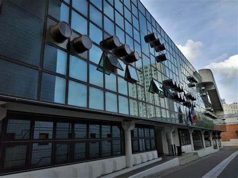

Koffi Wilfried ZUGBEDE
BIENVENUE SUR MON PORTFOLIO
Ce portfolio met en avant l'ensemble des compétences que j'ai développées et des projets que j'ai réalisés au cours de mes deux années de formation.
Contactez-moi
À Propos
Présentation
Je suis Koffi ZUGBEDE, étudiant en deuxième année de BTS SIO (Services Informatiques aux Organisations), Option SISR (Solutions d'infrastructure, systèmes et réseaux), l'option spécialisée pour les systèmes et réseaux, au sein du CFA INGETIS. Je suis en initial .
Actuellement diplômé du BAC D (scientifiques) et toujours en cours d'étude 🎓, je vous propose sur ce portfolio de retrouver ci-dessous les différentes études, et projet professionnel que j'ai pu entreprendre au sein de ma carrière. Vous retrouverez ci-dessous mon CV ainsi que mes différents projets 👩💻
CVProjet Professionnel
Mon projet professionnel est de poursuivre dans le domaine de l'informatique et d’approfondir mes connaissances sur les technologies, tout en envisageant les possibilités offertes par une troisième année en cybersécurité, avec un intérêt particulier pour la gestion de parc.
Qu'est ce que le BTS SIO ?
Le Brevet de Technicien Supérieur aux Services Informatiques aux Organisations (BTS SIO), s'adresse à ceux qui souhaitent se former en deux ans aux métiers d'administrateur réseau ou de développeur. Pour par la suite intégrer directement le marché du travail ou continuer des études, dans le domaine de l'informatique.
Le BTS SIO propose deux spécialités :
🖧 Option SISR
L’option Solution d’infrastructure, systèmes et réseaux forme des professionnels des réseaux et équipements informatiques (installation, maintenance, sécurité). En sortant d’un BTS SIO SISR, vous serez capables de gérer et d’administrer le réseau d’une société et d’assurer sa sécurité et sa maintenance.
Les techniciens supérieurs en informatique option SISR, peuvent accéder aux métiers de :
- Administrateur systèmes et réseaux
- Informaticien support et déploiement
- Pilote d’exploitation
- Support systèmes et réseaux
- Technicien d’infrastructure
- Technicien de production
- Technicien réseaux
💻 Option SLAM
L’option Solutions logicielles et applications métiers forme des spécialistes des logiciels (rédaction d’un cahier des charges, formulation des besoins et spécifications, développement, intégration au sein de la société).
Les techniciens supérieurs en informatique option SLAM, sont préparés aux métiers de :
- Développeur d’applications informatiques
- Développeur informatique
- Analyste d’applications ou d’études
- Analyste programmeur
- Programmeur analyste
- Programmeur d’applications
- Responsable des services applicatifs
- Technicien d’études informatiques
MON PARCOURS PROFESSIONNELS
CFA Ingetis,Technicien Support
Stage 4 semaines 2024- Installation de serveurs dans les racks,
- Mettre les serveurs dans la baie ,
- Organisation du cablage du reseau ,
- Ajout de disques dans les serveurs,
- Demontage et remontage des ordinateurs,
Aurelien Wietzke, DÉVELOPPEUR WEB
Stage 6 semaines 2024- Traduction des maquettes en codes
- Implémentation du design responsive
- Rédaction de la documentation technique
- Mise à jour des fonctionnalités
ASSISTANT DE FABRICATION
Carrefour, Lieusaint (Ile de France) Septembre 2023- Contribuer à la planification des activités de production en fonction des commandes
- Traiter les commandes des clients
- Maintenir un inventaire adéquat des matières premières et des produits finis
AGENT D’ACCUEIL ET D’ORIENTATION
Ratp, Paris (Île-de-France) 2023 (2 mois)- Accueillir, renseigner et orienter les passagers
MON PARCOURS SCOLAIRE
BTS SIO Option SISR
CFA INGETIS - Paris
BTS Services informatiques aux organisations Option Solutions d’Infrastructure, Systèmes et Réseaux
Pour ma future orientation professionnelle, je me suis orienté vers un BTS SIO dans laquelle je pourrais améliorer mes compétences en informatique.
LICENCE EN SOCIOLOGIE L2
Université Paris Nanterre
Programme de Licence en Sociologie, L2
LICENCE EN SOCIOLOGIE, L1 & L2
Université de Lomé - Togo
Programme de Licence en Sociologie, L1 & L2
BACCALAURÉAT. SÉRIE SCIENTIFIQUE
Lycée Lomé Cité - Togo
Documentations
Projets
Vous trouverez ci-dessous tous les anciens projets sur lesquels j'ai travaillé jusqu'à présent.
Projet en entreprise
Stage chez Aurélien Wietzke,
Juin - 2024Service informatiques
Monsieur Aurélien Wietzke est un entrepreneur individuel immatriculé sous le SIREN 903922615. Son entreprise est active depuis le 1er octobre 2021 et est spécialisée dans le secteur d'activité du conseil en systèmes et logiciels informatiques (code NAF 6202A). Cette activité englobe la fourniture de services de conseil en informatique, notamment l'analyse des besoins, la conception de systèmes informatiques, le développement de logiciels et l'assistance technique. L'entreprise est située à Cergy, en Île-de-France.
Développeur Web
6 semaines - 2024
Développement Web,
Traduction des maquettes en codes,
Implémentation du design responsive,
Rédaction de la documentation technique,
OUTILS UTILISÉS:
Flexbox
Figma
Django
CFA INGETIS
Novembre - 2024 Service Informatiques
Ingetis est une école spécialisée en informatique et numérique, proposant des formations en alternance adaptées aux besoins du marché. Basée à Paris, elle offre des cursus tels que le BTS SIO (Options SISR et SLAM), des Bachelors et Masters en cybersécurité, administration réseaux, et développement. L’école se distingue par son approche pratique, ses partenariats avec des entreprises, et son focus sur les nouvelles technologies, formant ainsi des professionnels prêts à intégrer le marché du travail.
Technicien support
4 semaines - 2024Mettre les serveurs dans la baie ,
Organisation du cablage du reseau ,
Ajout de disques dans les serveurs,
Demontage et remontage des ordinateurs,
MES CONNAISSANCES
Debian
CSS
HTML
windows
Vm WORKSTATION
Cisco
VEILLE TECHNOLOGIQUE
L'importance de la veille technologique
Dans le domaine de la technologie, les avancées se produisent rapidement. Être à jour avec les dernières tendances et les innovations nous permettra de rester compétitif sur le marché du travail.
La veille technologique nous permet d’anticiper les évolutions et les changements. Cela nous donne un avantage pour nous adapter rapidement aux nouvelles technologies et rester pertinent dans notre métier. En restant informé des nouvelles technologies, nous pouvons continuer à développer et à améliorer nos compétences techniques. Cela nous rendra plus polyvalent et capable de relever de nouveaux défis.
La veille technologique nous aide à repérer les opportunités professionnelles, comme de nouveaux projets, des collaborations potentielles ou des postes qui nécessitent des compétences spécifiques. Être au courant des dernières avancées technologiques nous aide à identifier et à prévenir les risques potentiels, tels que les failles de sécurité ou les obsolescences technologiques.
Outils de veille

Le monde informatique
Google Alerts

THÈME 1 : ÉVOLUTION EN MATIÈRE DE DÉFENSE EN CYBERSÉCURITÉ DES ENTREPRISES EN FRANCE
- La cybersécurité est un enjeu majeur pour les entreprises, notamment en France avec les JO de 2024, où les cyberattaques sont de plus en plus sophistiquées et fréquentes. Comprendre les évolutions dans ce domaine est crucial pour assurer la protection des données et des systèmes.
- Intérêts :
- Protection des données sensibles : Les entreprises doivent constamment améliorer leurs défenses pour protéger les données sensibles, telles que les informations financières, les données clients et les secrets commerciaux.
- Conformité réglementaire : Les réglementations en matière de protection des données, tel que le RGPD en Europe, exigent des entreprises qu’elles mettent en place des mesures de sécurité appropriées pour garantir la confidentialité et l’intégrité des données.
- Adaptation aux nouvelles menaces : Les cybercriminels utilisent des techniques de plus en plus sophistiquées, qui nécessite une veille constante et des technologies de pointe pour détecter et contrer les attaques.